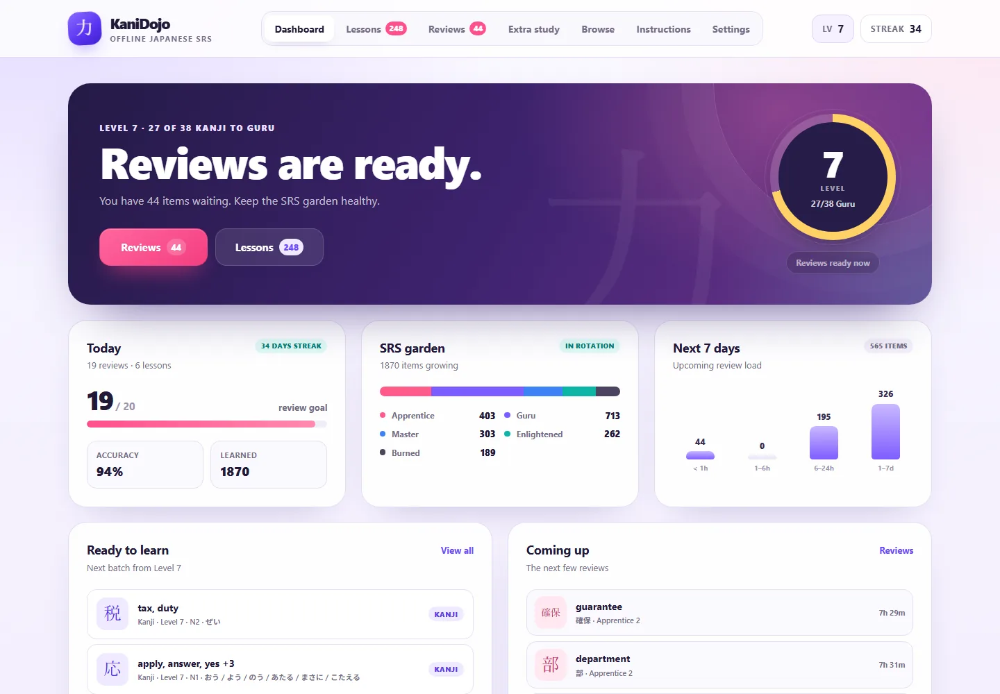
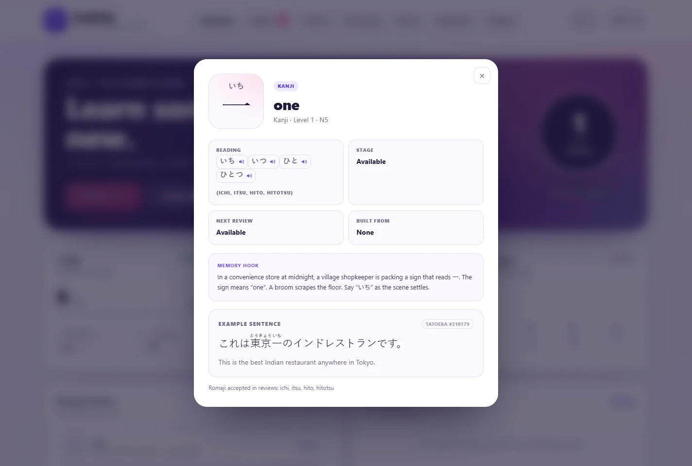

音
One voice. Every reading.
All 8,155 kana readings use the same Deepgram Aura-2 Izanami voice, bundled as Opus. No random voice changes.
10,353 kanji and vocabulary items. 8,155 bundled readings. One consistent voice. Lessons, reviews, JLPT study, and local progress with no account and no server.

A focused SRS with the things that matter: a clear review queue, level progression, JLPT tracks, local data, and audio that works without a browser voice.
All 8,155 kana readings use the same Deepgram Aura-2 Izanami voice, bundled as Opus. No random voice changes.
The app, curriculum, and audio are local. No network calls, no account, and no browser text-to-speech dependency.
Climb 60 frequency-based levels or switch to JLPT N5–N1. Your learned items and SRS stages stay intact.
Windows installer, portable ZIP, Linux self-extracting runner, and a standalone HTML build with every clip embedded.
All builds include the complete curriculum and the single-voice audio pack. The standalone HTML is the everything-in-one option.

OpenJLPT provides the vocabulary, readings, meanings, and JLPT levels under CC BY-SA 4.0. The 60-level frequency order is generated from kanji frequency data, and the adapted curriculum is shared under the same license.
Example sentences come from Tatoeba under CC BY 2.0 FR. Each linked example points back to its source. Reading audio is generated with Deepgram Aura-2 and is disclosed as AI-generated.
KaniDojo is free, independent, and not affiliated with OpenJLPT, Tatoeba, Deepgram, or any paid SRS. If it helps your study, share it with someone.
View source